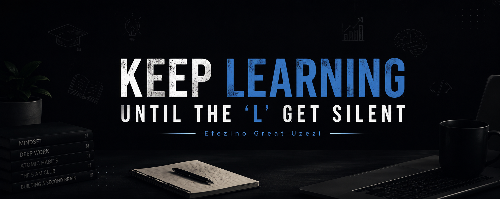

Building · Learning · Shipping
Efezino Great Uzezi.
Developer · AI Builder · Founder of PassSabi AI
I build practical technology by turning ideas into real projects. I'm learning through building, debugging and shipping — with a focus on becoming a stronger software developer and AI builder.
CURRENT BUILD
01 / About
Learning by building real things.
I'm Efezino Great Uzezi, a Nigerian developer and AI builder. My journey into technology has been driven by curiosity, ambition and a simple belief: you don't have to know everything before you start building.
I don't want to only use technology.
I want to understand it, build with it and use it to solve real problems.
That mindset turned a phone, tutorials, experiments and plenty of bugs into working projects. The goal now is to keep expanding the depth behind what I build.

02 / Skills
What I'm learning and using.
I don't want to collect technologies just to list them. I want to understand how the pieces work together.
Python
HTML
CSS
JavaScript
TypeScript
Git & GitHub
Supabase
Vercel
APIs
Authentication
Databases
AI Integration
Debugging
Responsive Web Development
Progressive Web Apps
Product Building
Development philosophy:
I want to use AI to become a better developer, not a developer who blindly copies AI output.
Understanding, debugging and improving the code matters to me.
03 / Journey
How I started coding.
Before PassSabi, there was curiosity — and a lot of code that didn't work on the first try.

Exploring first
I started by exploring technology — coding, AI and websites — pulled in by the idea that one person could create something other people could actually use.
Python, first
I began with fundamentals: variables, conditions, loops, functions, lists, strings and problem-solving. From there I moved into HTML, CSS and JavaScript.
Learning by doing
I stopped treating tutorials as the finish line. Every concept became a reason to ask, “how do I actually build this?”
Learning through bugs
Real projects meant real errors — broken authentication, failing API calls and configuration problems. Debugging became part of the learning process.
Using AI without depending on it
AI tools helped me move faster and explain unfamiliar code, but the goal became understanding enough to find and fix problems myself.
From syntax to product thinking
The questions changed from “how do I write this?” to “who needs this, how will they find it and how does it ship?”
04 / Featured build
PassSabi AI.
A student-focused AI learning platform I founded to explore how AI can make learning more interactive and accessible.
FOUNDED + BUILT BY EFEZINO GREAT UZEZI
Your personal AI teacher.
Building PassSabi pushed me beyond basic coding into authentication, databases, APIs, AI integration, responsive interfaces, deployment and product thinking.
It became a practical laboratory for understanding what happens when an idea has to become a working product.
AI
Education
JavaScript
Supabase
Vercel
PWA


05 / Case study
How I built PassSabi AI.
PassSabi didn't arrive as a finished product. It grew in stages, with each version forcing another technical problem to be understood.
Start with the problem
I wanted an AI teacher for students, not another generic chatbot — something built around how Nigerian students learn and prepare for exams.
From idea to pages
I built the frontend across multiple pages — login, signup, password reset, profile and settings — with separate guest and signed-in experiences.
Building the AI teacher
I shaped the chat logic so PassSabi behaves more like a tutor and added controls for chat history, pinning, renaming, deleting and stopping generation.
Outgrowing local storage
Chats and user data initially lived in the browser. I moved the app toward Supabase-backed accounts, storage and synchronization.
Building the account system
I implemented signup, login, logout, password reset, email verification and session handling while working toward guest-to-account migration.
Fixing what broke
Production problems became part of the work: tracing configuration, authentication, APIs and deployment issues instead of walking away from them.
Making it feel like a product
I developed the PassSabi identity and added PWA support so the experience could feel more like an app than a single webpage.
Going live
I connected GitHub to Vercel and added the website foundations needed for a publicly deployed product.
What's next
PassSabi roadmap.
Accounts & cloud sync
Authentication and cloud-backed data for accounts, chats and progress.
Richer AI tutoring
Image and PDF homework, voice interactions and subject-focused tutoring.
Exam prep & CBT
Practice experiences for WAEC, NECO and JAMB.
Classrooms & dashboards
Teacher accounts, student dashboards and progress tracking.
06 / Projects
Things I've built.
Projects turn what I learn into something real.
PROJECT / 01
PassSabi AI
AI-powered learning and product-building work focused on students.
Explore ↗PROJECT / 02
Calculator Projects
Early builds that helped develop programming logic, functions, input handling and debugging.
View GitHub ↗PROJECT / 03
This Portfolio
A living record of my development journey, experiments, projects and goals.
Read the story ↑07 / Direction
Where I'm going.
Build useful products
Turn ideas into applications that solve genuine problems rather than stopping at tutorials.
Grow in AI
Understand AI more deeply and become better at building practical AI-powered applications.
Become a stronger developer
Improve programming fundamentals, software engineering knowledge and debugging ability.
Keep entering real-world challenges
Learn through hackathons, coding challenges and projects that force practical problem-solving.
Help students
Build technology that makes learning more accessible and useful for students.
08 / Approach
Learn.
Build.
Break.
Debug.
Improve.
Ship.
I don't expect every project to be perfect. I expect every project to teach me something.
09 / Contact
Let's connect.
I'm interested in connecting with developers, builders, students, mentors, collaborators and people interested in technology.